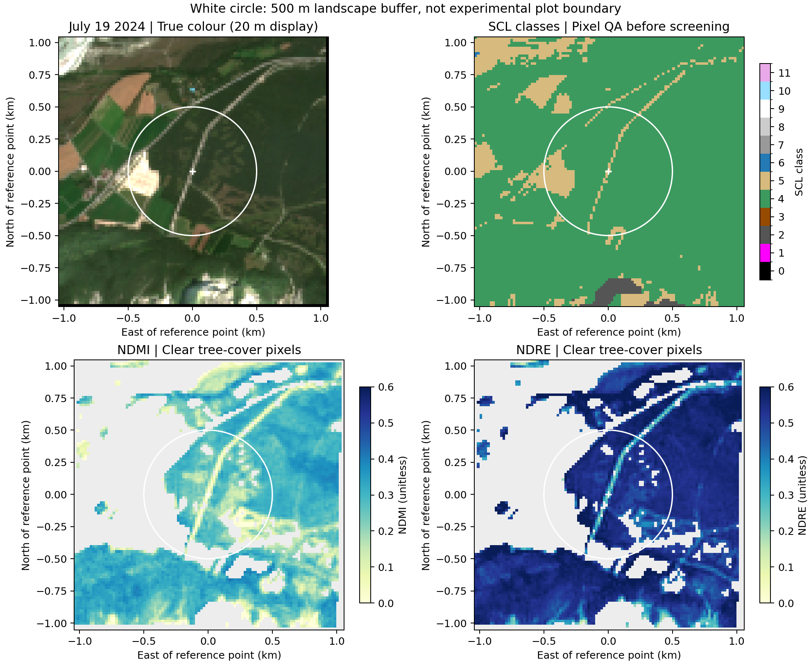
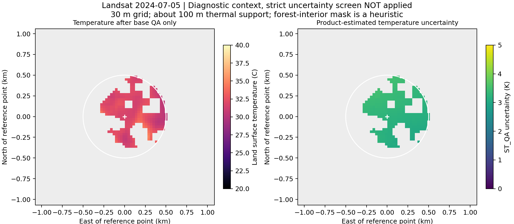
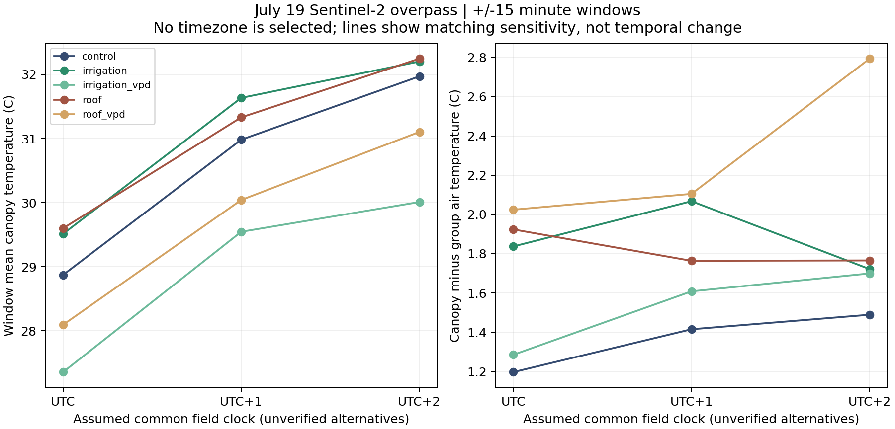
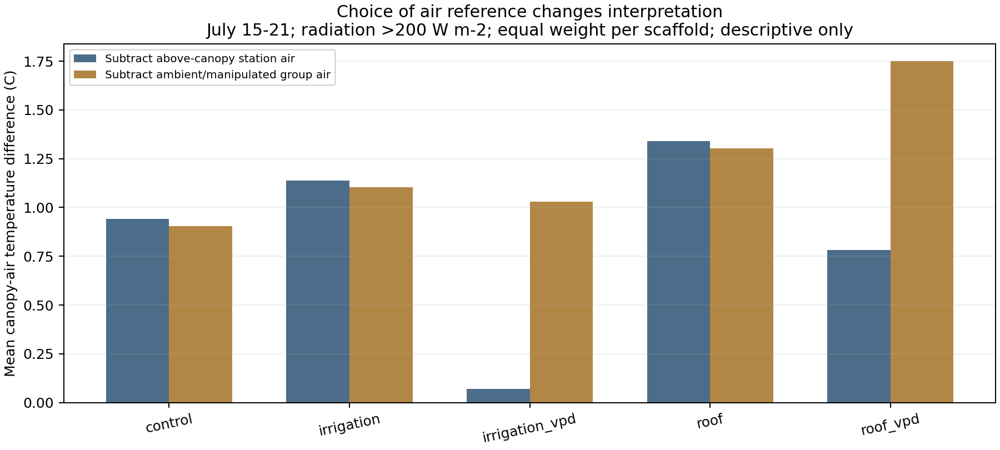

目的：为 EPFL PERL Forest Ecophysiology and Remote Sensing 面试完成一个真实公开数据的小型遥感实验。先复现光谱和地表温度处理，再检查现场观测能否与卫星匹配。分析影像为 2024 年 7 至 8 月的选定观测；现场子集为 7 月 15 至 21 日。手册和参考结果整理于 2026 年 11 月 20 日。
本练习回答三个具体问题：怎样从真实 Sentinel-2 数据得到可靠的森林光谱指标；怎样从 Landsat 得到有质量筛选的地表温度；在现有时间和空间信息下，这些量能否与现场树冠温度组成可验证的观测对。它为后续生理研究建立处理基础，不直接估计森林死亡风险。
项目名称校正：EPFL 职位描述的是树冠热与光谱响应、VPD 和土壤水分。WSL 的 UPDACE 是钾与 CryoNanoSIMS 项目，不能因研究人员重叠而将两个项目视为同一课题。[S1–S2]
包内已有真实卫星原始数值裁剪、现场子集、源元数据、完整脚本和参考输出。首次复现不需要登录 Earth Engine，也不需要再次下载完整 SAFE 文件。需要联网的步骤只有安装 Python 依赖；随后 run_all.py 完全离线处理。建议 Python 3.12，QGIS 用于查看空间结果。
cd Pfynwald_Remote_Sensing_Lab python3 -m venv .venv source .venv/bin/activate python -m pip install -r requirements.txt python run_all.py
上面是 macOS 或 Linux 的命令。Windows 可用 py -3.12 -m venv .venv 创建环境，在命令提示符中运行 .venv\Scripts\activate，然后执行同样的 pip 和 run_all.py 命令。请在解压后的项目文件夹中运行，不要直接在 ZIP 内打开脚本。
运行结束后查看 outputs/figures、outputs/tables、outputs/field。脚本把原始输入保留在 data 中，仅重建输出。config.json 保存空间范围和筛选阈值。参考结果对应默认配置；改变阈值后，应以新 CSV 和审计文件为准。
| 位置 | 用途 |
|---|---|
| data/satellite/raw | 原生 DN 裁剪及每景 Sentinel-2 元数据 XML |
| data/satellite/manifest.json | 场景 ID、UTC、波段路径、缩放偏移和来源 |
| data/field | 带原始质量标记的 EnviDat 学习子集及其来源记录 |
| scripts/process_satellite.py | 光学与热红外处理、森林筛选、统计和地图 |
| scripts/process_field_data.py | 现场质量检查、单位转换、10 分钟聚合和时钟情景 |
| outputs/rasters | 可以直接拖入 QGIS 的分析 GeoTIFF |
| outputs/tables 与 outputs/field | 统计 CSV、匹配情景和审计结果 |
| 实验 | 操作问题 | 输出与观测单位 |
|---|---|---|
| A 光学遥感 | 如何得到研究区内无云且空间范围一致的 NDVI NDMI NDRE | 每景每像元的指标；日期汇总的独立时间数量是卫星观测日期数 |
| B 热红外遥感 | 如何识别质量合格的森林地表温度及混合像元风险 | 每景地表温度与有效区域；30 米网格不等于独立 30 米热观测 |
| C 现场匹配 | 现场时钟、空气参考和足迹是否支持卫星对比 | 候选过境窗口；未确认时区和足迹前不计算验证误差 |
科学假设应保留可证伪性。在相近辐射、风和空气温度下，水分限制可能改变蒸腾和叶片能量平衡，从而改变树冠温度；光谱也可能反映叶片含水、色素和结构变化。但针叶形态、空气耦合及长期适应可减弱温度差异。Pfynwald 已有研究发现，气孔等生理特征变化并不必然伴随树冠温度处理差异。[S3]
本阶段检验的是数据和指标能否可靠获得。研究问题不是预先证明“高温就是干旱”或“NDMI 低就是水势低”。土壤水分、气孔导度和树冠几何并不完整，所以生理因果推断留到后续实验。
| 来源 | 本包使用内容 | 需要识别的限制 |
|---|---|---|
| Sentinel-2 L2A | 7 月 4 14 19 29 日及 8 月 6 23 日，共 6 个选定日期 | 是教学示例日期，不是完整或均匀的夏季时间序列 |
| Landsat 8 和 9 C2 L2SP | 7 月 5 13 21 29 日及 8 月 6 14 22 30 日，共 8 景 | 有观测不代表有可用地表温度，云筛选后允许没有值 |
| ESA WorldCover 2021 v200 | class 10 树木覆盖类别，约 10 米 | 历史土地覆盖图，不是 2024 年实测冠层密度 |
| EnviDat 776 | 7 月 15 至 21 日，15 个树冠红外测量变量，15120 行 | 保留 good 为 15056 行；64 行 outlier 不进入主分析 |
| EnviDat 798 | 冠层上方气象 80640 行；冠层内聚合气象 90720 行 | 源时间戳无明确时区；冠层内为环境组聚合而非逐树配对 |
| EnviDat 799 | 280 行叶水势观测，可选输出 | 现有导出没有气孔导度 光合速率或蒸腾；不能按目录标题假定具备 |
| EnviDat 775 | 后续阶段的土壤水势和体积含水量 | 未纳入本次学习子集；灌溉处理标签不能代替土壤实测 |
全部卫星场景和源链接见 data/satellite/manifest.json；现场 DOI、筛选日期和 SHA256 见 data/field/manifest.json。现场子集来自此前保存的公开数据版本，本次保留其原始字节；新版本下载可能有变化，不能把日期相同直接当作文件内容相同。[S4–S8]
参考点采用实验设计论文的 46.301944°N、7.611111°E。分析坐标系为 WGS84 UTM 32N，EPSG:32632。先读取约 2 公里见方的场景背景，再以参考点周围 500 米半径作为汇总区域。这个圆不是实验地块边界。没有提供准确树冠、红外仪器足迹和处理多边形时，不把卫星像元分配给喷雾或灌溉处理。[S9]
森林筛选独立于本次 NDMI 或温度结果：将 WorldCover 2021 中 class 10 转为二值类别图，再面积平均到目标网格。像元中至少 80% 的面积被该地图标为树木覆盖时才进入主筛选。这里的 80% 是“类别面积比例”，不等于实测冠层闭合度。[S8]
为什么不用 NDVI 大于 0.6 定义森林：这种做法可能把已经受影响、绿度下降的森林先删掉。独立土地覆盖图减少了这一循环定义问题，但仍需承认旧图和分类误差。代码另外计算 250、500、750 米半径及不同已发布近似坐标下的 NDMI，检查空间范围选择是否改变结果。
QGIS 操作：新建项目，将项目 CRS 设为 EPSG:32632；拖入 outputs/rasters/s2_forest_fraction_20m.tif，设为单波段伪彩色，最小值 0、最大值 1；再加载各日期指数。图层叠加偏离时，先检查数据 CRS 和仿射变换，不要直接用移动图层的方法修补。
本包 Planetary Computer 镜像中的 Sentinel-2 是带偏移的原生 ESA DN，每景 XML 都记录 BOA_QUANTIFICATION_VALUE=10000 和 BOA_ADD_OFFSET=-1000。先屏蔽 DN=0 的无数据值，再转换光学波段。SCL 是分类编码，不作反射率转换。[S5]
reflectance = DN * 0.0001 - 0.1
不要把这条偏移规则机械套到其他数据集。例如 Earth Engine 的 S2_SR_HARMONIZED 已对基线变化做过处理，不能再减一次 1000。你已有的 SAFE 需读取其自身元数据；处理原则是依实际产品，而不是依文件年份猜测。
一个算术检查示例：若 B8A 的 DN 为 4000，B11 为 2500，正确反射率是 0.30 和 0.15，NDMI 是 0.333。直接用原始 DN 计算得到 0.231。加性偏移不会在比值中抵消。此例仅用于解释算法，不是实测像元。
| 变量 | 使用波段 | 本实验输出 |
|---|---|---|
| NDVI | B08 与 B04 | 10 米波段按地理定位平均到 B8A 的 20 米网格 |
| NDMI | B8A 与 B11 | 两者原生 20 米，明确使用窄近红外 B8A 版本 |
| NDRE | B8A 与 B05 | 两者原生 20 米 |
| SCL | 分类栅格 | 最近邻重投影，禁止双线性制造新类别 |
不同分辨率裁剪的行列数和原点并不相同，不能简单 reshape 数组。代码通过仿射变换和 CRS 对齐。NDMI 的 B8A 版本与常见 B08 版本不完全相同，比较研究时要一致。Sentinel-2 没有热红外测温波段，也不能直接重现 531/570 纳米窄波段 PRI。[S5,S10]
NDVI = (B08_mean20 - B04_mean20) / (B08_mean20 + B04_mean20) NDMI = (B8A - B11) / (B8A + B11) NDRE = (B8A - B05) / (B8A + B05)
主分析保留 SCL 4 植被和 5 裸地类中的候选像元，再与独立的树木覆盖掩膜相交；去掉无数据、缺陷、阴影、云、雪、水和未分类像元。对云影及云类 3、8、9、10 做一圈相邻 20 米像元缓冲。用于指数的反射率必须有限且在 0 至 1 之间，分母大于 0.000001。这些是本练习声明的保守筛选，不是生理胁迫阈值。
每景都输出有效树木覆盖像元数和比例。预设至少 70% 候选森林像元可用、且不少于 30 个输出像元，才进入主要日期比较。整景云量只作记录，不代替这个比例。即使影像没有明显厚云，薄云、邻近效应和阴影仍可能残留，需要检查 RGB 和地图。
先计算每景所有有效像元的中位数和四分位距，再取通过覆盖率检查的各景有效掩膜交集，重新计算共同像元统计。共同像元线用于减少“今天只剩北部、明天只剩南部”的空间采样差异。交集过小或为空时，不报告稳定的区域时间趋势。图中四分位距表示空间差异，不是均值的置信区间。
python scripts/process_satellite.py
检查 outputs/tables/S2_scene_summary.csv 与 S2_fixed_support_summary.csv；在 QGIS 打开 S2_2024-07-19_NDMI_20m.tif 和 S2_2024-07-19_NDRE_20m.tif。日期之间使用同一颜色范围。

使用 Collection 2 Level 2 的 L2SP 产品。这里的 lwir11 资产对应 ST_B10，已经是地表温度产品，不是原始热红外亮温；不需要重复执行从辐亮度反演亮温再套植被比辐射率的流程。先屏蔽填充值，再执行官方缩放。[S6]
temperature_K = DN_ST_B10 * 0.00341802 + 149.0 LST_C = temperature_K - 273.15 ST_uncertainty_K = DN_ST_QA * 0.01 cloud_distance_km = DN_ST_CDIST * 0.01
QA_PIXEL 去掉 bit 0 填充、1 扩张云、2 卷云、3 云、4 云影、5 雪和 7 水体。QA_RADSAT 必须为 0。进一步采用 ST_QA 不超过 2 K、距云至少 1 km 的分析规则。这两个数是本实验的选择，不是 USGS 统一规定；输出同时测试 1、2、3 K 与 0.3、1、2 km 的组合。[S7]
森林热像元还采用 60 米的向内筛选，减少边缘混合。它只是基于 30 米网格中心距离的近似过滤，不能保证原生热足迹完全位于森林。TIRS 原生热尺度约 100 米，产品提供 30 米网格；重采样不会创造新的独立 30 米热信息。[S11]
实际运行中，8 景影像都没有通过预设的 2 K 不确定性筛选，严格结果中的缺值被保留。为展示温度产品的内容，另外生成文件名含 baseQA_CONTEXT 的补充结果：仍执行云、云影、雪、水、填充和饱和筛选，但不施加 ST_QA 与云距离阈值。它是明确区分的教学背景结果，不是把严格筛选悄悄放宽。ST_QA 是产品估计不确定性，不能称为本次实测验证误差。
图二展示基础 QA 下森林有效像元最多的一个场景及其 ST_QA，按覆盖率选择，不按温度高低选择。严格结果与背景结果分别保存；背景日期序列也提供固定共同像元统计。7 月 21 日核心区在基础云筛选后已经完全不可用，因此不能与现场一周数据组成热红外验证对。

树冠温度只保留 good；原始 outlier 行仍留在 data 中。气象质量标记为 1 且值类型为 observed、corrected、derived 的数据进入主分析。已做夜间辐射噪声校正的记录保留。每个 10 分钟格至少需要 8 个有效分钟，均值用于温度、RH、VPD、辐射和风速，降水用累计，风向用圆均值。操作状态平均后叫运行比例，不能称为二值开关状态。[S4]
现场表按测量 ID 接元数据，再按唯一时间格接气象。一个卫星日期不能因为匹配了 15 个传感器和许多分钟，就变成数百个独立卫星训练样本。日或周汇总先在传感器内计算，再在组内等权汇总。
python scripts/process_field_data.py --input data/field --output outputs/field python scripts/plot_field.py
保留数据提供的 VPD。另用 FAO 公式计算审计值：温度单位摄氏度，RH 单位百分数，VPD 单位 kPa。先求 10 分钟平均再计算的审计值，与数据提供的 VPD 不要求完全相等；原始计算方法、聚合顺序和四舍五入都可能造成差异。[S12]
es_kPa = 0.6108 * exp(17.27 * Tair_C / (Tair_C + 237.3)) VPD_kPa = es_kPa * (1 - RH_percent / 100) deltaT_above = Tcan - Tair_above deltaT_group = Tcan - Tair_within_ambient_or_manipulated_group
上方空气温度来自一个气象站。冠层内空气温度来自 ambient 或 manipulated 条件下的传感器聚合，并非每棵树自己的空气温度。喷雾既增湿也冷却空气，不能把喷雾组较低的树冠温度全部解释为气孔蒸腾增强。deltaT 和 VPD 都涉及空气温度，也不能把它们的简单相关直接当作独立生理证据。[S9]
现场 messtime 没有时区标记，现有 README 也未明确。保留 source_time_naive。跨现场数据流使用“源时钟相同”的工作假设，尚未证明。卫星时间明确为 UTC；分别把现场时钟假设为 UTC、固定 UTC+1 和 UTC+2，提取过境前后各 15 分钟。这个情景检查不会决定哪一种时区是正确的。
7 月 19 日 Sentinel-2 时间是 10:20:21.024 UTC；7 月 21 日 Landsat 8 时间是 10:16:29.731228 UTC。现场仅这一周，因此各传感器只有一个潜在匹配日期。即使通过云检查，也不足以计算可信的相关系数、R² 或生理预测精度。先确认仪器时区和 10 分钟区间标签含义，再谈正式配准。

| 7 月 19 日指标 | 实际输出 |
|---|---|
| 整景云量 | 18.43% |
| 500 米范围候选树木覆盖像元 | 1303 |
| 通过像元筛选 | 1303，占候选像元 100.0% |
| NDVI 中位数 | 0.7651 |
| NDMI 中位数 B8A B11 | 0.2440 |
| NDRE 中位数 B8A B05 | 0.5365 |
这些光谱值描述了所选时间和范围，不能直接换算为叶水势、气孔导度或森林健康评分。一个日期的数值本身没有证明干旱程度；需要合适的历史基线、气象控制和现场验证。
| Sentinel-2 日期 | 有效比例 | 主比较通过 | NDMI 中位数 |
|---|---|---|---|
| 2024-07-04 | 100.0% | 是 | 0.2605 |
| 2024-07-14 | 71.4% | 是 | 0.2380 |
| 2024-07-19 | 100.0% | 是 | 0.2440 |
| 2024-07-29 | 100.0% | 是 | 0.2340 |
| 2024-08-06 | 100.0% | 是 | 0.2319 |
| 2024-08-23 | 100.0% | 是 | 0.2208 |
Landsat 严格筛选的 8 景全部为零个保留像元。下面只展示明确标为 baseQA_CONTEXT 的背景结果，展示的是原始产品在基础 QA 后的内容，不能替代严格结果。
| Landsat 日期 | 基础 QA 像元 | 背景 LST 中位数 摄氏度 | ST_QA 中位数 K |
|---|---|---|---|
| 2024-07-05 | 363 | 31.87 | 3.25 |
| 2024-07-13 | 63 | 13.49 | 3.70 |
| 2024-07-21 | 0 | 缺失 | 缺失 |
| 2024-07-29 | 363 | 33.83 | 3.25 |
| 2024-08-06 | 363 | 34.71 | 3.52 |
| 2024-08-14 | 0 | 缺失 | 缺失 |
| 2024-08-22 | 363 | 28.88 | 3.51 |
| 2024-08-30 | 363 | 30.18 | 3.33 |
上表为各景各自有效像元的背景中位数；7 月 13 日只有少量有效像元，尤其不宜当作完整森林均值。日期变化还要查看固定共同像元 CSV。温度差异也包含当天气温、辐射、风、含水量和物候等因素，不能只归因于干旱。
| 现场时钟假设 | 7 月 19 日控制组树冠温度 | 冠层上方空气温度 |
|---|---|---|
| UTC | 28.872 °C | 27.405 °C |
| UTC+1 | 30.982 °C | 29.040 °C |
| UTC+2 | 31.970 °C | 30.350 °C |
三种时钟假设使控制组树冠温度相差约 3.10 °C。此结果表明时间来源会明显影响匹配，不表示卫星有 3.10 °C 的误差。每个情景为 3 个支架传感器、每个传感器 3 个有效时间格，组值为各支架窗口均值的等权平均。

| 检查现象 | 应该检查什么 |
|---|---|
| 找不到某周 Sentinel-2 | 先去掉过严整景云筛选，核对 L2A 日期 区域 瓦片32TLS；本包确实包含7月19日场景 |
| 整景云量很高 | 看 ROI 内 SCL 和有效比例，不能只看整景百分数 |
| 指数几乎处处为零或明显偏低 | 核对 DN 缩放偏移 无数据和波段顺序；不要对已经 harmonized 的数据再减1000 |
| 栅格行列数不同 | 用 CRS 和仿射变换对齐，不用数组裁剪凑形状 |
| 温度约300 | 很可能仍是 Kelvin；确认产品再减273.15 |
| 一整景温度没有有效值 | 检查QA和云，缺值可能是正确结果，不应降低标准直到出现想要的结果 |
| 同一日期很多现场行 | 记录数不等于卫星独立日期数，避免伪重复 |
| 结果与手册不同 | 先核对默认config 数据SHA256 依赖版本和输入版本；修改筛选阈值会合理改变结果 |
| 树木覆盖与RGB不吻合 | 检查2021至2024土地变化和分类误差，记录不一致而非静默重画 |
| 温差与VPD高度相关 | 检查共享空气温度 日周期和辐射风速等混杂，暂不作因果解释 |
可运行 python verify_inputs.py 检查本包输入字节。若你有新版本原始文件，请另建输入目录，保留新来源和元数据，再明确更新读取映射；不要覆盖旧输入并保留旧校验记录。在线重新获取相同卫星裁剪可用 scripts/acquire_satellite.py，首次离线复现无需运行它。
第一项扩展是补齐一个生长季的现场温度、局地气象、土壤体积含水量和土壤水势，并确认时区与区间标签。灌溉量不能代替土壤水分；处理标签也不能当作连续的水分测量。第二项是取得精确树冠、处理边界和红外仪器足迹，用近地或 UAV 分辨率进行处理比较，再决定怎样聚合到卫星尺度。
生理目标可以先选择叶水势或气孔导度中的一个，必须确认测量时间和树冠对象吻合。当前叶片表只有水势且日期和处理覆盖不齐；MPa = bar × 0.1，保留原有负号。模型目标、训练单位、候选变量和排除规则应在看预测结果前写清楚。
建议先比较简单的气象基线与增加遥感信息后的模型。基线使用空气温度、VPD、辐射、风和季节项；扩展模型再加入温差、NDMI 或 NDRE，并加入真实土壤变量。先用可解释线性或广义加性模型检验候选关系或机制假说，再决定是否需要随机森林。VPD 与温度并非独立测量构造，模型应检查共线性和变量定义。
正式验证按完整日期或连续时间块划分；跨空间推广留出整个站点，跨时间推广留出整个年份。标准化、缺失值填补和变量选择只在训练折内拟合。若只有一个站点的少量独立卫星日期，就先报告描述性结果和观测限制。重复分钟或邻近像元不能用来人为扩大验证样本。[S13]
理想的第二阶段假设是：在气象基线之外，遥感指标是否提供额外的水分状态信息；这种信息在低土壤水分或高VPD条件下是否改变；UAV到卫星聚合后是否仍能保留信号。无明显温度响应同样是可解释的科学结果，而不是需要调整筛选直到显著的失败。[S3,S14]
你的 15 至 20 分钟面试报告还要覆盖背景和硕士研究。这个练习建议用两页、约 3 分钟：第一页放真实彩色和指数图，解释来源、20米网格、云和森林掩膜；第二页放时钟或空气参考敏感性图，解释为什么连接生理数据需要细致的时空定义。可以展示遥感与数据质量的即刻贡献，并清楚说明生理测量能力需要在项目中继续培养。
下面的英文表述适用于你亲自跑完并理解流程以后；不要把尚未独立复现的代码描述成你已经独立完成的研究。
I reproduced a small remote sensing workflow for Pfynwald using public Sentinel-2, Landsat and field data. I checked radiometric scaling, cloud masks, forest spatial support and the timing of field observations. The exercise shows what can be measured reliably and what still needs verification before physiological validation. I would next extend it to a full growing season and use crown-level and soil-water observations to test whether remote sensing adds information beyond meteorological conditions.
可以向团队提出三个具体问题：仪器的时间戳使用UTC、固定CET还是当地夏令时；是否可以取得树冠、红外足迹和处理边界；项目第一阶段最希望预测或解释哪一个生理变量。这些问题直接对应本次实验发现的数据需求。
[S1] EPFL PERL 职位说明 https://www.epfl.ch/labs/perl/phd-position-in-forest-ecophysiology-and-remote-sensing/
[S2] WSL UPDACE 项目 https://www.wsl.ch/en/projects/updace-potassium-mediated-drought-adaptation-in-trees-by-integrating-cryonanosims/
[S3] Gauthey et al. 2023 Absence of canopy temperature variation despite stomatal adjustment https://doi.org/10.1111/nph.19136
[S4] Hunziker et al. 2026 气象与操纵数据 https://doi.org/10.16904/envidat.798
[S5] Copernicus Sentinel-2 产品和缩放说明 https://sentiwiki.copernicus.eu/web/s2-products
[S6] USGS Landsat Level2 缩放因子 https://www.usgs.gov/faqs/how-do-i-use-a-scale-factor-landsat-level-2-science-products
[S7] USGS Landsat Collection2 QA https://www.usgs.gov/landsat-missions/landsat-collection-2-quality-assessment-bands
[S8] ESA WorldCover 数据和许可 https://esa-worldcover.org/en/data-access
[S9] Schaub et al. 2026 Disentangling atmospheric and soil drought https://doi.org/10.1111/nph.71661
[S10] WSL Pfynwald 近地遥感 https://www.wsl.ch/en/projects/proximal-sensing-at-vpdrought-in-pfynwald/
[S11] NASA TIRS 原生分辨率 https://science.nasa.gov/mission/landsat/tirs/
[S12] FAO56 第三章 气象数据 https://www.fao.org/4/x0490e/x0490e07.htm
[S13] Roberts et al. 2017 Cross-validation strategies for structured ecological data https://doi.org/10.1111/ecog.02881
[S14] D’Odorico et al. 2021 Drone-based physiological index https://doi.org/10.1111/pce.14177
[S15] D’Odorico Gisler Schaub 2026 树冠温度数据 https://doi.org/10.16904/envidat.776
[S16] Bortolami et al. 2026 叶片水势数据 https://doi.org/10.16904/envidat.799
[S17] Pfynwald 土壤监测数据 后续阶段 https://doi.org/10.16904/envidat.775
[S18] Earth Engine Harmonized Sentinel2 目录 https://developers.google.com/earth-engine/datasets/catalog/COPERNICUS_S2_SR_HARMONIZED
署名：Contains modified Copernicus Sentinel data 2024；Landsat data courtesy of the USGS；© ESA WorldCover project 2021 / Contains modified Copernicus Sentinel data 2021 processed by ESA WorldCover consortium。卫星访问渠道为 Microsoft Planetary Computer。EnviDat 和 WorldCover 数据按各自 CC BY 4.0 条款使用并保留原始作者和 DOI。学习代码采用 MIT 许可，数据许可独立适用。